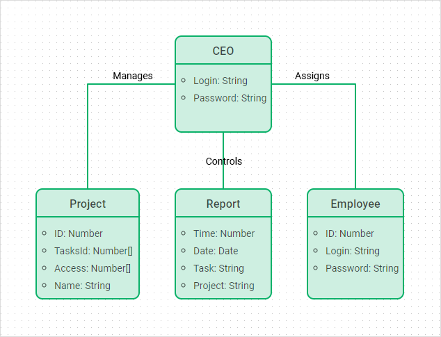
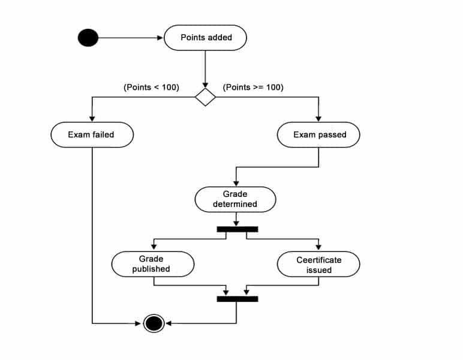

What are a UML Diagrams? good question
UML is an acronym that stands for Unified Modeling Language, its history is interesting but not relevant to what it is.
UML Diagrams are split into 2 distinc groups, these groups are: structural diagrams and behavioral or interaction diagrams.

A structural diagram is the base structure of the architecture of an application, its where you decide the static connections and accesses of your separate functions outside of time
Types Of Structural Diagrams
